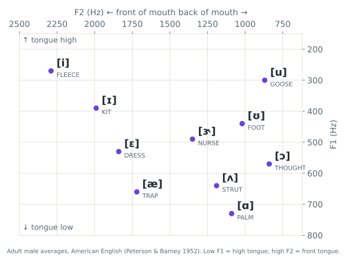

How we make vowels: source + filter
Your voice has two separate parts. The source is the buzz from your vocal folds, and it sets the pitch. The filter is the shape of your mouth and throat, and it determines the vowel you hear. Change one and the other stays the same. Press Play and try it.
1. Source the buzz: evenly spaced harmonics
2. Filter vocal tract shape
3. Output the vowel we hear
Spectrogram like Praat: time runs left to right, darker = louder. Harmonics are the thin stripes, formants the dark bands
The formant values are approximate adult averages from Peterson & Barney (1952), based on American English. Your own vowels may be different. For example, many British speakers have a much fronter GOOSE vowel, with a higher F2. The sound is a simple synthesis, so expect it to sound a bit robotic.
- Pick a vowel, then drag the pitch. The harmonics squeeze together or spread apart, but the dark formant bands stay put.
- Keep the pitch still and switch vowels. The harmonics don't move, but which ones are loud changes.
- Tick Whisper. There's no pitch at all, and you can still hear the vowel.
Where do the harmonics come from? a closer look at the Source plot
A vibrating string or the vocal folds don't wobble in just one way. They vibrate as a whole, in halves, in thirds, in quarters and so on, all at the same time. Each of these patterns is a harmonic. The top line shows them all added together, which is what really happens.
How the Source plot shows them: each harmonic becomes one vertical bar.
- Left to right = how fast it vibrates (its frequency). Harmonic 2 vibrates twice as fast as 1, so its bar sits twice as far along. That's why the bars are evenly spaced.
- Height = how strong it is. The higher harmonics are weaker, so the bars get shorter.
- Bar 1 is the pitch (F0). Move the pitch slider at the top of the page and all the bars shift together.
Real voices have dozens of harmonics, not four, which is why the Source plot shows a long row of bars.
Position of English monophthong vowels
